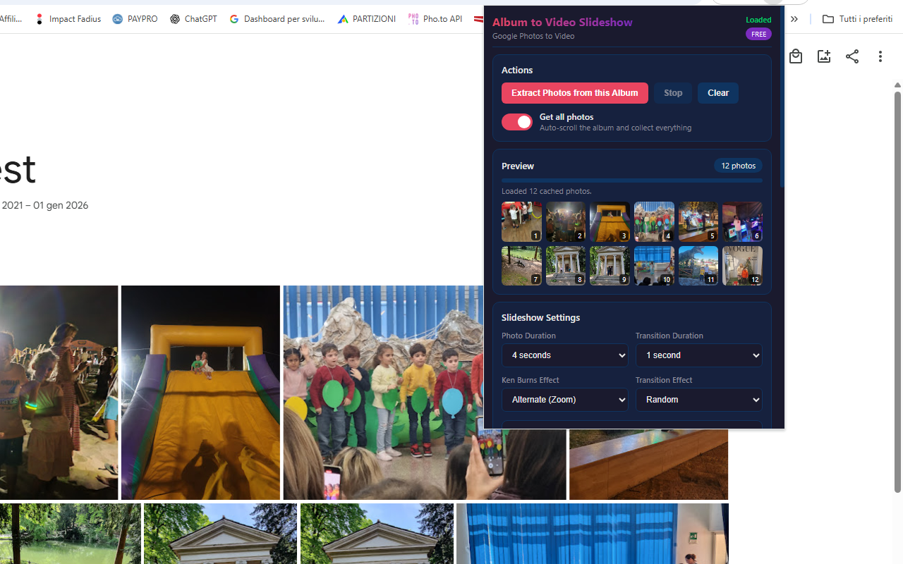
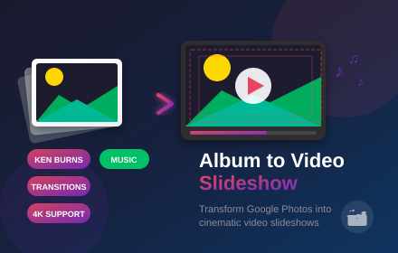

Google Photos to Video Slideshow (memories maker)
Transform your Google Photos albums into stunning video slideshows 🎬. With Album to Video Slideshow, you can create professional-looking videos from your photo memories in just a few clicks. This powerful Chrome extension extracts photos from any Google Photos album and transforms them into dynamic videos with cinematic Ken Burns effects, smooth transitions, and background music.
No more complicated video editing software or hours of manual work. The extension handles everything automatically—extracting high-resolution photos, applying professional motion effects, adding smooth transitions between images, and even syncing background music. Watch your slideshow come to life with real-time preview before downloading the final video.
One of the standout features is the Ken Burns effect 🎯, the same cinematic technique used by professional filmmakers. Choose from multiple motion styles: Zoom In, Zoom Out, Pan Left/Right/Up/Down, or combine them for dramatic effect. Use Alternate or Random modes to keep your slideshow dynamic and engaging. Each photo comes to life with smooth, professional camera movements.
Transitions between photos are equally impressive. Choose from Fade, Dissolve, Slide animations in four directions, Zoom transitions, or let the extension randomly mix them for variety. Add background music from built-in tracks or upload your own MP3 files. The audio automatically loops for longer slideshows and fades out smoothly at the end.
Export options give you full control over quality. Create videos in 720p, 1080p, 2K, or even 4K resolution. Choose your frame rate (24fps cinematic, 30fps standard, or 60fps smooth) and bitrate for the perfect balance between quality and file size. Videos are exported in high-quality WebM format, compatible with YouTube, Vimeo, social media, and all major platforms.
📋 How to Use
- Install the extension from the Chrome Web Store
- Navigate to any Google Photos album you want to convert.
- Click the extension icon to open the control panel.
- Click "Extract Photos" to automatically collect all images from the album.
- Customize your slideshow: photo duration, Ken Burns effects, transitions, and music.
- Adjust advanced settings if needed (resolution, frame rate, bitrate).
- Click "Create Video Slideshow" and watch your video being generated.
- Preview the result and download your finished video.
📷 Screenshots


✨ Key Features
- Easy Photo Extraction — Automatically scrolls and extracts high-res photos from Google Photos albums
- Ken Burns Effects — Zoom In/Out, Pan in all directions, combined movements, alternate and random modes
- Smooth Transitions — Fade, Dissolve, Slide (4 directions), Zoom, and Random transitions
- Background Music — Built-in tracks or upload your own MP3/WAV/OGG files
- Custom Cover Slide — Add a professional title slide with custom text and styling
- Multiple Resolutions — Export in 720p, 1080p, 2K, or 4K quality
- Flexible Frame Rates — 24fps (cinematic), 30fps (standard), or 60fps (smooth)
- Adjustable Timing — Customize photo duration (2-10 seconds) and transition length
- Professional Fade Out — Smooth 2.5-second video and audio fade at the end
- Real-time Preview — Watch your video before downloading
- High-Quality WebM Output — VP9 + Opus codec for excellent quality and compatibility
- Dark Theme Interface — Professional, easy-on-the-eyes design
🎯 Perfect For
- Family photo albums and precious memories
- Travel and vacation slideshows
- Birthday and anniversary celebrations
- Wedding photo compilations
- School and graduation memories
- Social media content creation
- Business presentations and portfolios
- Memorial tributes and dedications
- Real estate and product showcases
- Event documentation and highlights
🔒 Privacy & Security
- Works entirely in your browser — no uploads to external servers
- Your photos stay private on your computer
- No account required
- No data collection
With Album to Video Slideshow, creating professional video slideshows has never been easier. Whether you're preserving family memories, creating content for social media, or building a presentation, this extension gives you Hollywood-quality results with just a few clicks. No video editing experience needed—everything works right in your browser. 🎬
⬇️ Download from Chrome Web Store